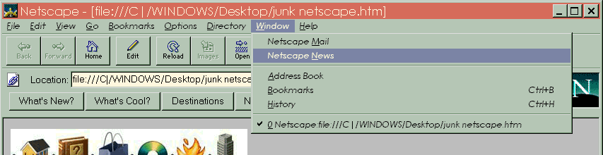
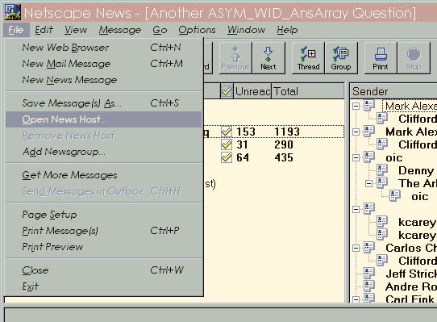
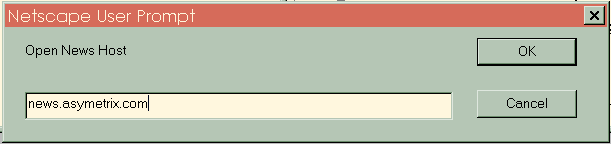
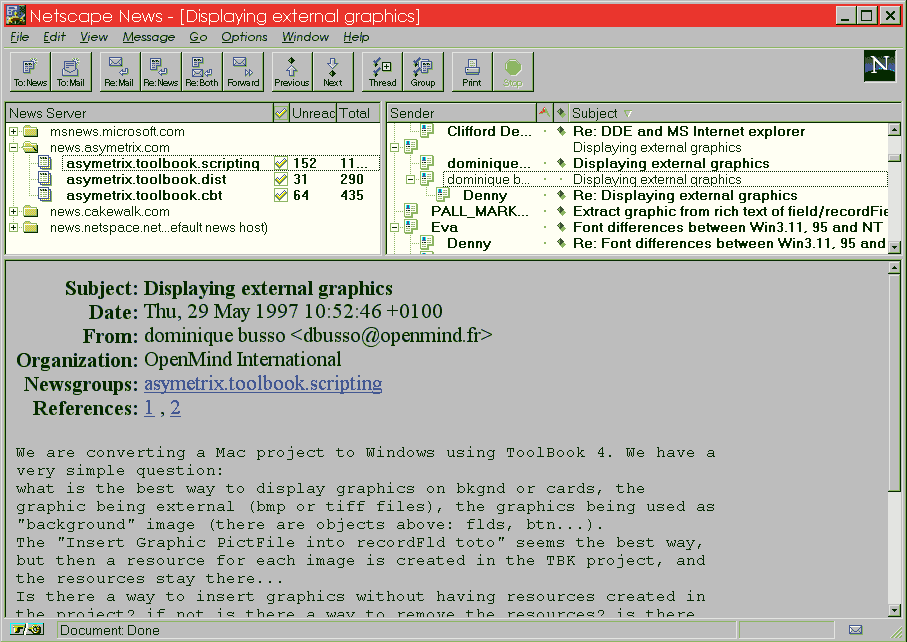
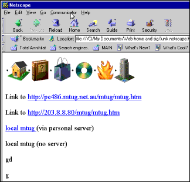
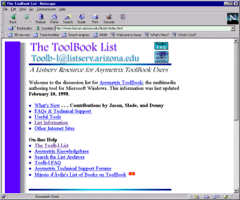

Australian Toolbook User Group


Main Toolbook discussion groups:
bit.listserv.toolb-l asymetrix.toolbook.install asymetrix.toolbook.dist asymetrix.toolbook.scripting asymetrix.toolbook.cbt asymetrix.toolbook.assistant
Loosly related discussion groups:
alt.3d
alt.binaries.pictures
alt.binaries.multimedia
alt.graphics.pixutils
comp.compression
comp.grahpics.animation
comp.graphics.algorithms
comp.graphics.raytracing
comp.graphics.visualisation
comp.multimedia
comp.os.os2.multimedia
comp.os.ms-window.programmer.multimedia
comp.publish.cdrom.multimedia
comp.publish.cdrom.software
comp.sys.amiga.multimedia
misc.education.multimedia
rec.arts.{anim,disney}
rec.video.{desktop,production}
sci.image.processing
sci.virtual-worlds
How to Access Asymetrix Toolbook Newsgroups Solution by - Andy Bulka
In early 1997, Asymetrix setup a news server containing several Toolbook related news groups, allowing worldwide customers to contact them via the Internet. According to Asymetrix, these news groups replace the current direct e-mail support they offered and should prove to be more efficient, allowing them to better keep Toolbook developers informed of patches and updates. Unlike the ToolBook list server, these forums will be officially supported by Asymetrix technical support:
"While we will not be able to set specific expectations for customers such as 24 hour response or that we will respond to every message, but we will do the best we can with the resources we have. Eventually we will reintroduce direct e-mail as a premium service users will be able to purchase."
You can access the news server through the Asymetrix Web page:
Here is the current list of ToolBook groups:
news://news.asymetrix.com/asymetrix.toolbook.cbt
" " " " " " .toolbook.dist
" " " " " " .toolbook.install
" " " " " " .toolbook.scripting
" " " " " " .toolbook.dist
In order to access the forums using your Netscape browser:

Figure 27 - Select from the menu Window/Netscape News

Figure 28 - select the menu File/Open News Host...

Figure 29 - Type in news.asymetrix.com

Figure 30 - Click on the newsgroup and then subject you are interested in.
Remember, besides reading, you can post your own questions as well as
answer other people’s queries. Happy newsgrouping!
Here are the same steps, using Netscape Communicator 4.0. Note that some of the menu items
have been changed e.g. Window/Netscape News is now Communicator/Collabre Newsgroups. And
File/Open News Host… is now File/New Discussion Group Server…

Figure 31 - Animated GIF - are the same steps, using Netscape Communicator 4.0
How to access the Listserv Toolbook Forum
The Toolbook mailing list discussion forum is one of the oldest and best Toolbook Forums, and can be subscribed to as a mailing list, or viewed as a newsgroup viz: bit.listserv.toolb-l You can search portions of past discussions via this web site (see the Toolbook web-site reviews section of this Toolbook Tips Magazine for more info)

Figure38a - The ToolBook List, the oldest home of independent Toolbook discussions on the internet.
 I want it all!
I want it all!
Here is a place where you can download all the Toolbook discussions
forums for the years 1994-1998. The newsgroups archives available include the Asymetrix
hosted public forums, the listserv plus the older classic compuserve forums. The Knowledge
Base comes with a search engine. See
http://www.atug.com/toolbook/nuggets.htm
To access thousands more tips offline - download Toolbook Knowledge Nuggets